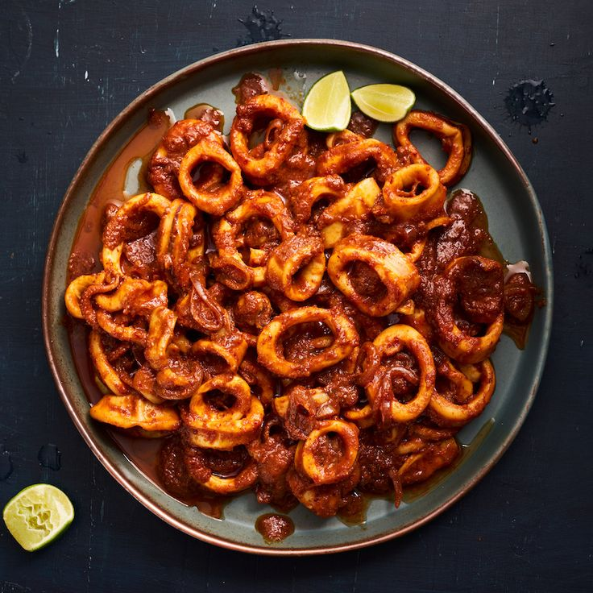
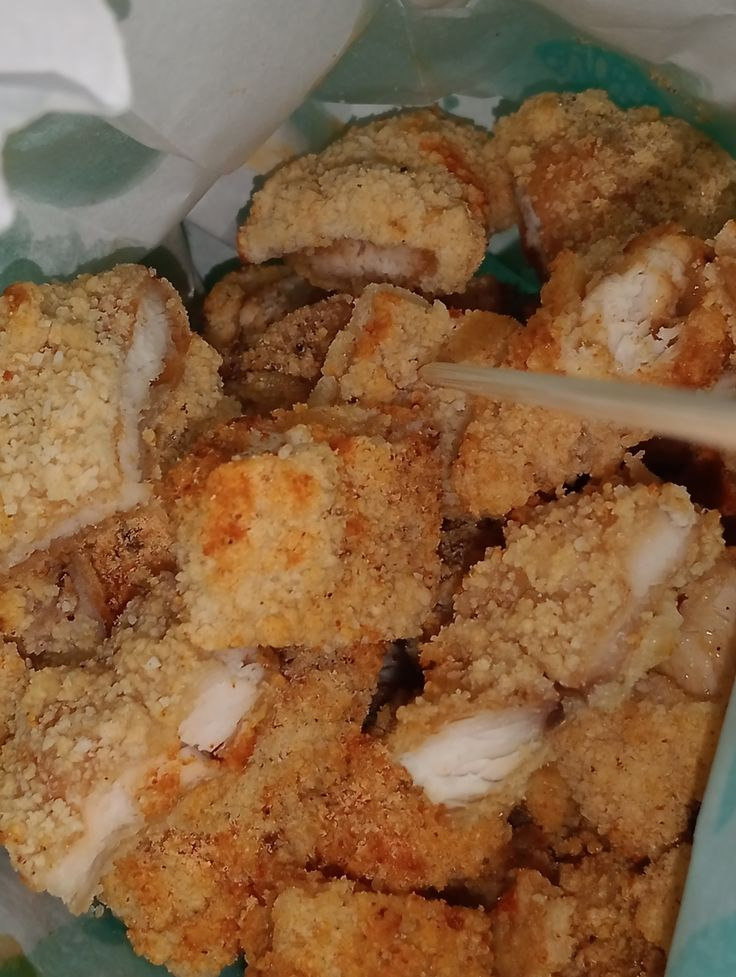
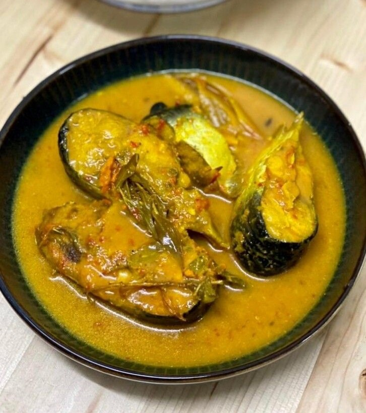

Get To Know My Favourite Dish!
✩ Sambal Sotong

∿ Click on the picture for more. ⤴
One of the most comforting dishes my grandmother makes a heartfelt tradition she never misses whenever I return home. It tastes like love served on a plate
✩Ayam Gunting

∿ Click on the picture for more. ⤴
One of my ultimate comforts in life is savoring a plate of ayam gunting. The crispy, juicy goodness paired with its rich, savory flavor never fails to bring me joy, a taste that lingers in my heart long after the last bite.
✩Patin Masak Tempoyak

∿ Click on the picture for more. ⤴
An old friend, introduced me to a dish I never imagined I’d enjoy, and it turned out to be one of the best surprises of my life. Since,I'm not a big fan of 'ikan'.